청소·집안일 가이드
자주 하는 집안일을 주기별로 정리했어요. 조금씩 나눠 하면 훨씬 수월해요.
매일
하루 10분이면 충분해요. 쌓이기 전에 가볍게 정리해요.
-
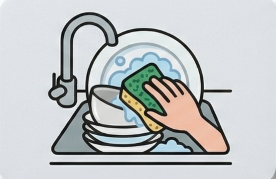
설거지
소요 10분 -
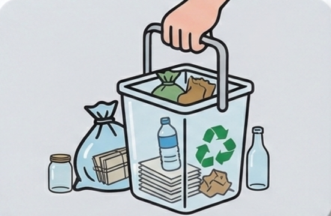
쓰레기 비우기
소요 5분 -
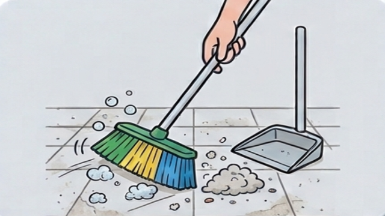
바닥 쓸기
소요 5분 -
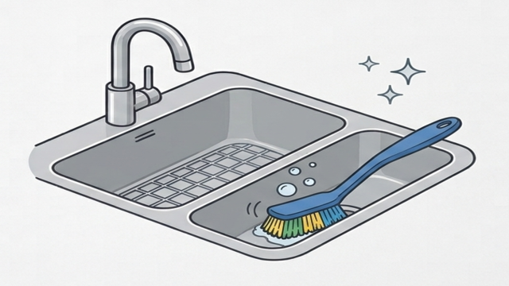
배수구 정리
소요 3분 -
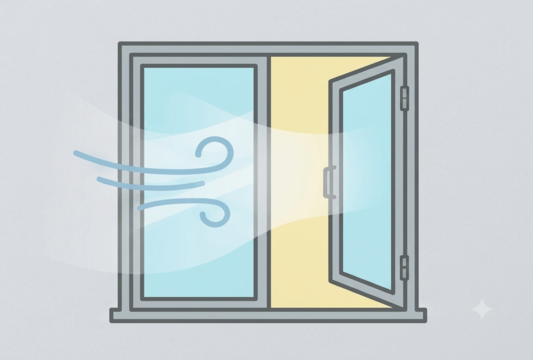
환기
소요 10분 -
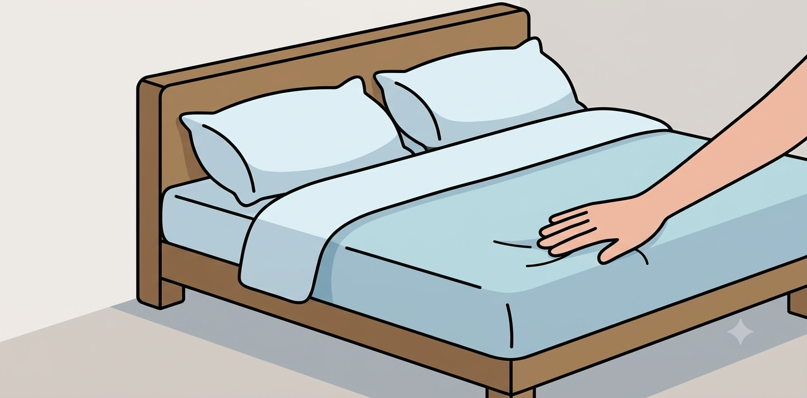
침구 정리
소요 2분
매주
주말이나 정해 둔 요일에 한 번씩 해요.
-
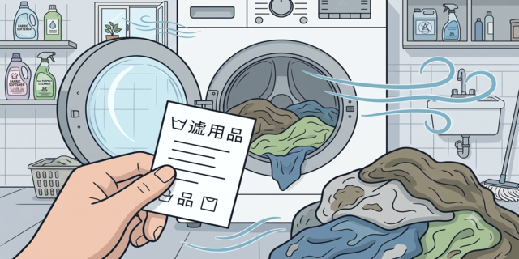
빨래
소요 30분 -
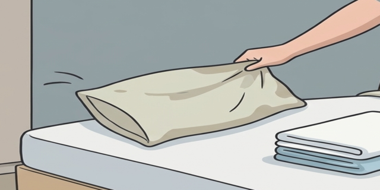
침구 교체
소요 15분 -
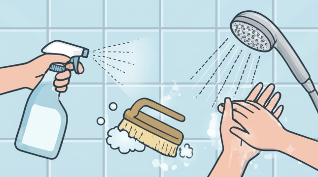
욕실 청소
소요 20분 -
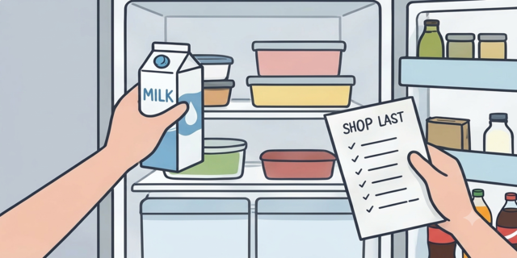
냉장고 점검
소요 10분 -
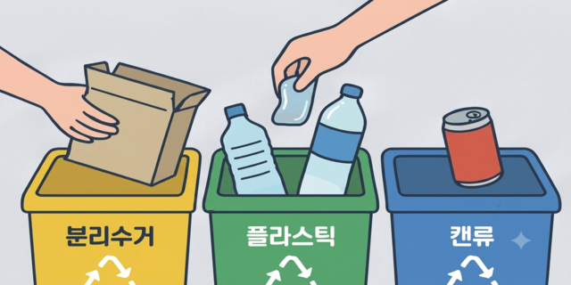
분리배출
소요 10분 -
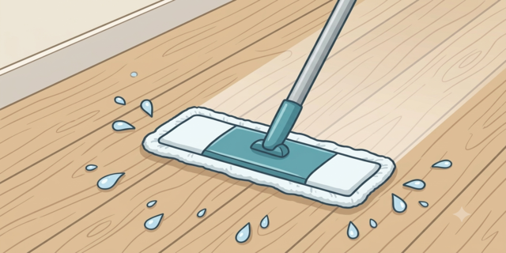
바닥 물걸레
소요 20분
매월
한 달에 한 번, 눈에 잘 안 띄는 곳을 점검해요.
-
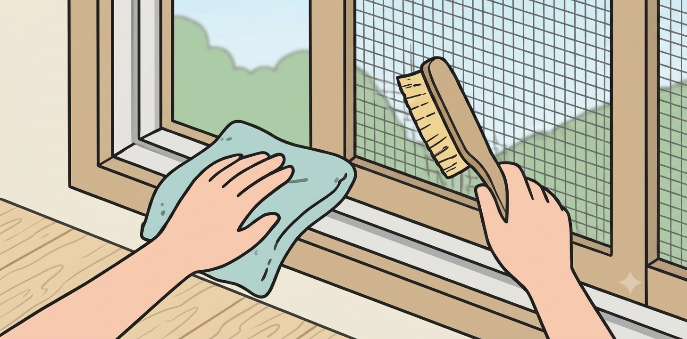
창틀·방충망
소요 20분 -
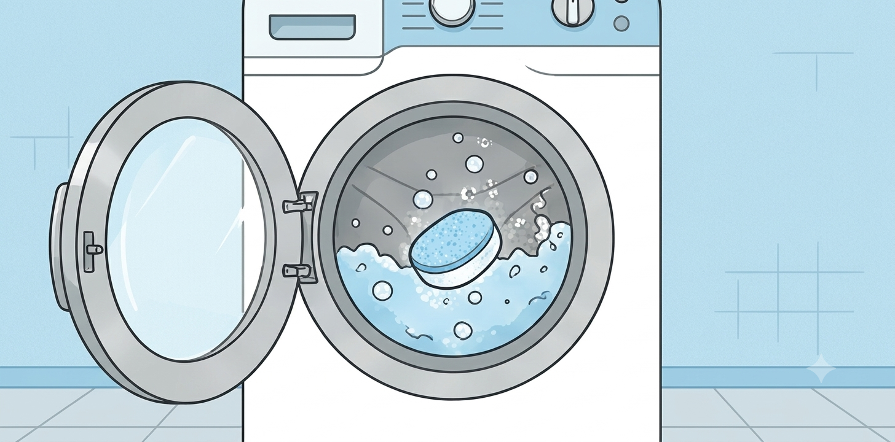
세탁기 청소
소요 15분 -
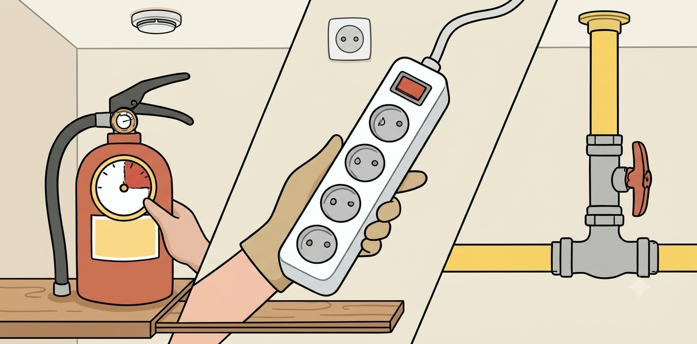
가전 점검
소요 10분 -
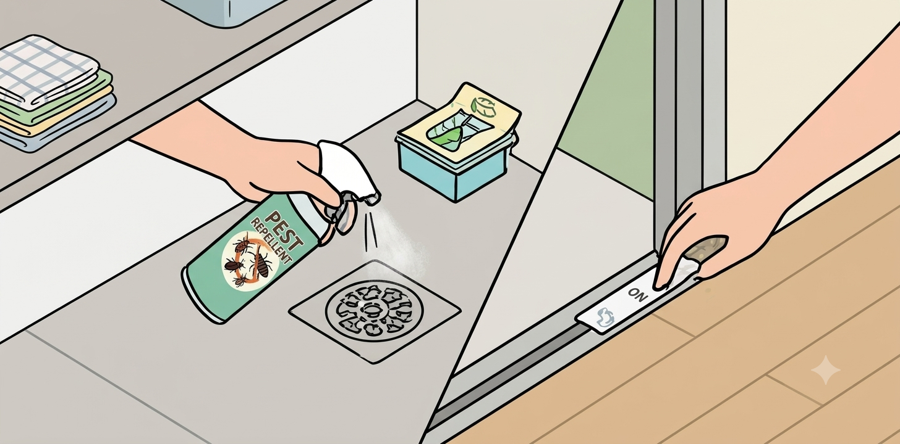
해충 방지
소요 10분 -
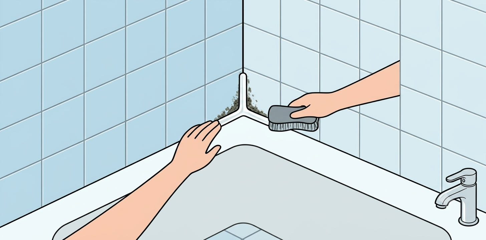
곰팡이 점검
소요 10분 -
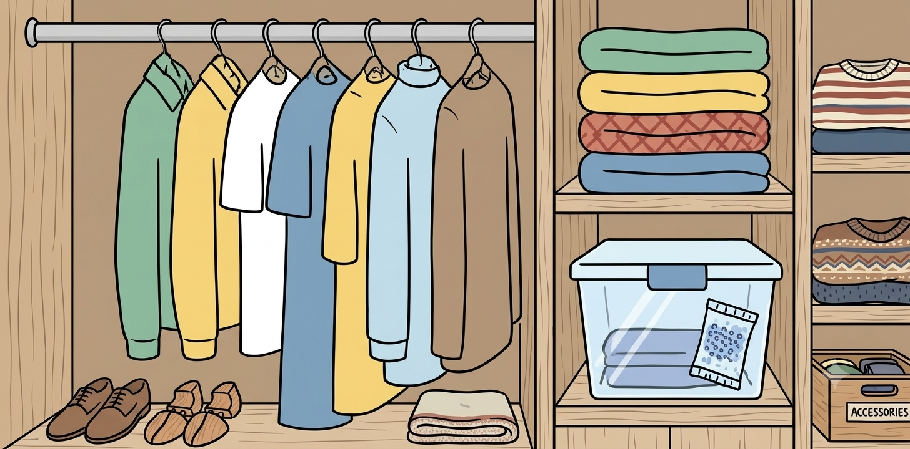
옷장 정리
소요 30분
주간 집안일 시간표
| 요일 | 할 일 | 내용 |
|---|---|---|
| 월 | 빨래 | 세탁기를 돌리고 널어요. |
| 화 | 욕실 청소 | 샤워 후 가볍게 닦아요. |
| 수 | 분리배출 | 지역 배출 요일을 확인해요. |
| 목 | 냉장고 점검 | 유통기한이 지난 음식을 정리해요. |
| 금 | 바닥 물걸레 | 주말 전에 한 번 닦아요. |
| 토 | 침구 교체 | 시트와 커버를 교체해요. |
| 일 | 휴식·장보기 | 다음 주 먹을 재료를 준비해요. |